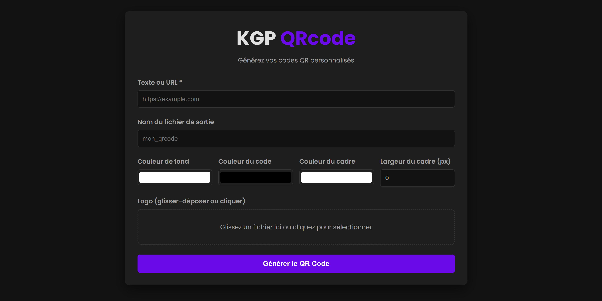

Générez des QR Codes
à votre image.
Créez vos propres QR Codes en quelques clics. Choisissez vos couleurs, ajustez vos bordures sur-mesure, insérez votre logo au centre et exportez instantanément. Sans inscription, sans abonnement.
Télécharger KGP QRcode (.exe)Pour Windows • Aucune installation requise

Pourquoi utiliser KGP QRcode ?
Démarquez-vous des QR Codes en noir et blanc classiques. Personnalisez vos codes à l'image de votre marque ou de vos envies, directement depuis votre PC.
Intégration de Logo
Ajoutez la touche ultime : insérez votre propre image ou le logo de votre entreprise en plein centre de votre QR code sans affecter sa lisibilité par les smartphones.
Personnalisation Totale
Ajustez chaque détail visuel : couleur de fond, couleur des motifs du QR code, couleur de la bordure et même l'épaisseur exacte de la bordure en pixels.
Format Universel
Saisissez n'importe quelle donnée : un lien de site web (URL), un profil réseau social, un texte brut, un numéro de téléphone ou un accès Wi-Fi.
100% Portable (Stand-alone)
C'est un simple fichier .exe. Pas besoin d'installation, pas de droits administrateur. Mettez-le sur votre clé USB et créez vos QR Codes partout.
Génération 100% Hors-ligne
Contrairement aux générateurs web qui trackent vos liens, tout est calculé localement sur votre machine. Vos données privées ne sont jamais envoyées sur internet.
Le Mot du Développeur
J'en avais assez des sites générateurs remplis de publicités ou nécessitant un compte payant pour ajouter de la couleur et un logo. KGP QRcode est ma solution, offerte gratuitement.
Comment ça marche ?
Obtenez votre QR Code sur-mesure en 3 étapes extrêmement simples.
Entrez votre contenu
Ouvrez l'application et tapez ou collez le texte que vous souhaitez encoder (l'adresse de votre site web, vos coordonnées, le menu de votre restaurant, etc.).
Personnalisez le design & le Logo
Jouez avec les options pour rendre votre code unique : choisissez vos couleurs, définissez l'épaisseur de la bordure, et surtout, importez votre logo (PNG/JPG) pour qu'il s'affiche fièrement au centre de votre création.
Générez et sauvegardez
Cliquez sur le bouton de génération. Votre QR Code personnalisé est prêt instantanément ! Vous n'avez plus qu'à l'exporter en image pour l'utiliser sur vos cartes de visite, flyers ou réseaux sociaux.